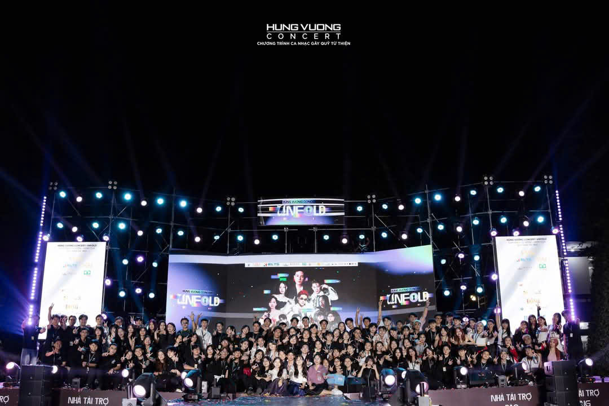
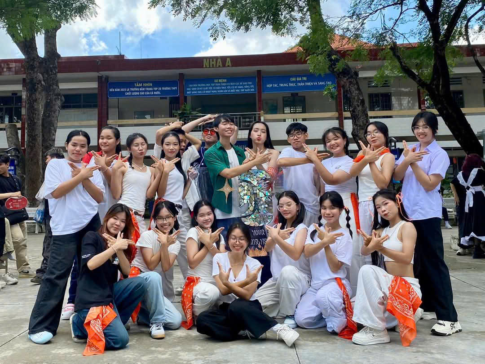
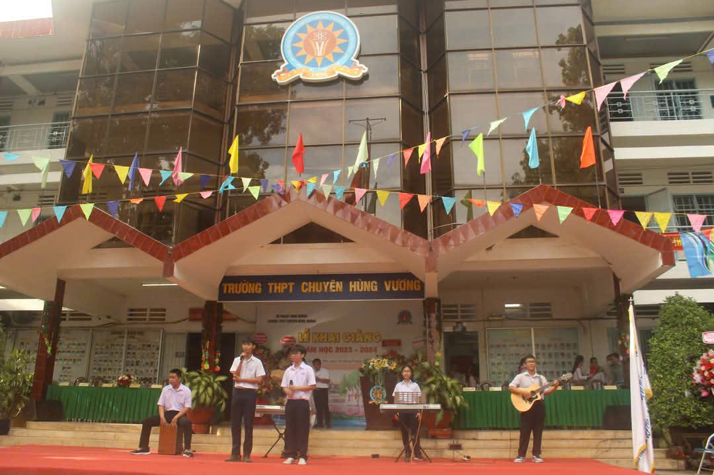
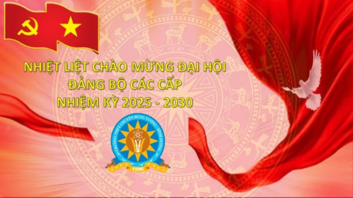

Là ngôi trường trọng điểm của tỉnh nên Trường có nhiệm vụ đào tạo học sinh giỏi có chất lượng cao, những nhân tài tương lai phục vụ cho sự phát triển kinh tế - xã hội của tỉnh nhà nói riêng và đất nước nói chung. Năm 2005, Trường được Bộ GDĐT công nhận là trường THPT đầu tiên của tỉnh Bình Dương đạt chuẩn Quốc gia và duy trì qua các chu kỳ cho đến nay. Năm 2011, Trường được công nhận là đạt chuẩn kiểm định chất lượng giáo dục cấp độ 3 và duy trì qua các chu kỳ cho đến nay. Năm 2018, Trường nhận Cờ thi đua (lần 2) của Thủ tướng Chính phủ. Năm 2020, Trường vinh dự được Chủ tịch nước tặng thưởng Huân chương Lao động Hạng 3. Nhiều năm liền trường hoàn thành xuất sắc nhiệm vụ, học sinh đỗ tốt nghiệp THPT và đỗ đại học 100%, nhận cờ thi đua của tỉnh, đứng đầu cụm khối thi đua, nhận nhiều bằng khen của UBND tỉnh, nhận cờ thi đua trong phong trào thi đua “Đổi mới sáng tạo trong quản lý, giảng dạy và học tập” của Bộ GDĐT và được Sở GDĐT đánh giá là lá cờ đầu trong ngành giáo dục tỉnh nhà.
Địa chỉ: 593 Đại lộ Bình Dương, Hiệp Thành, Thủ Dầu Một, Bình Dương, Bình Dương, Việt Nam.
Đào tạo: Trước năm học 2024 - 2025, trường có 9 môn chuyên với các lớp: Toán học - Tin học, Tiếng Anh, Vật Lý, Sinh học, Hóa học, Ngữ văn - Lịch sử - Địa lý và một lớp hệ không chuyên học chương trình song ngữ môn Toán và các môn Khoa học tự nhiên (Hiện tại lớp hệ không chuyên đã dừng tuyển sinh từ lâu). Từ năm học 2024 - 2025, trường có 9 môn chuyên với 9 lớp chuyên: 01 lớp chuyên Toán học, 01 lớp chuyên Toán học - Tin học, 02 lớp chuyên Tiếng Anh, 01 lớp chuyên Vật Lý, 01 lớp chuyên Sinh học, 01 lớp chuyên Hóa học, 01 lớp chuyên Ngữ văn và 01 lớp chuyên Lịch sử - Địa lý.
Trường Trung học phổ thông chuyên Hùng Vương (tiếng Anh: Hung Vuong High School for The Gifted) là trường trung học phổ thông chuyên trọng điểm và duy nhất của tỉnh Bình Dương. Trường được thành lập theo Quyết định số 4757/QĐ-UB ngày 23/10/1995 của UBND tỉnh Sông Bé (nay là tỉnh Bình Dương). Với sự tài trợ của Công ty thương mại-xuất nhập khẩu Thanh Lễ, Công ty cổ phần Phi Long, Công ty cổ phần Hoàng Gia, ngày 24 tháng 4 năm 1996, trường THPT chuyên Hùng Vương khánh thành và chính thức đi vào hoạt động, tính đến nay đã là 29 năm. Hiện nay, Phó hiệu trưởng phụ trách của trường là thầy Võ Thanh Tú với Phó hiệu trưởng là thầy Phạm Văn Tùng và cô Bùi Thị Triệu Phúc
Với quyết tâm chính trị cao, tiếp tục phát huy thành tựu nhiều năm qua, Trường THPT chuyên Hùng Vương được sự lãnh đạo, chỉ đạo sâu sát của Tỉnh ủy, UBND tỉnh, Sở GDĐT Bình Dương, cũng như được sự quan tâm chỉ đạo thường xuyên của Thành ủy, UBND thành phố Thủ Dầu Một, sự ủng hộ của các ban ngành đoàn thể, sự kết hợp chặt chẽ của cha mẹ học sinh và các doanh nghiệp, các nhà hảo tâm trong mọi hoạt động của nhà trường; nhờ sự quan tâm, lãnh đạo, chỉ đạo nghiêm túc của Chi bộ, Ban giám hiệu và sự nỗ lực cố gắng không ngừng của tập thể Hội đồng sư phạm, sự phấn đấu của tất cả học sinh nên kết quả tất cả các lĩnh vực về mặt giáo dục, hoạt động của nhà trường trong suốt nhiều năm qua đều giữ vững hoặc vượt chỉ tiêu đề ra.
Theo hướng dẫn tuyển sinh của Sở Giáo dục và Đào tạo tỉnh Bình Dương hằng năm, mỗi em được dự thi tuyển tối đa 2 môn chuyên. Để được dự thi, thí sinh phải được xếp loại hạnh kiểm, học lực cả năm học của các lớp cấp Trung học cơ sở (THCS) từ khá trở lên, xếp loại tốt nghiệp THCS từ khá trở lên. Nếu các em không trúng tuyển vào trường THPT chuyên Hùng Vương sẽ được Sở Giáo dục - Đào tạo căn cứ vào điểm thi của 3 môn thi bắt buộc để xét vào lớp 10 các trường THPT công lập.
Nhiều câu lạc bộ đáp ứng sở thích, đam mê đa dạng và phát triển tiềm năng của học sinh.
  HVC (Hùng Vương Concert)
DorD (HVG Dance Club)
The Clef (Âm nhạc)
Hội trại truyền thống cho học sinh khối 12 tại Hồ Cốc, Bà Rịa - Vũng Tàu.
Đội bóng chuyền nữ trường THPT chuyên Hùng Vương vô địch Giải thể thao học sinh Bình Dương 2025 sau 10 năm.
Nhiệt liệt chào mừng đại hội Đảng bộ các cấp nhiệm kỳ 2025-2030.